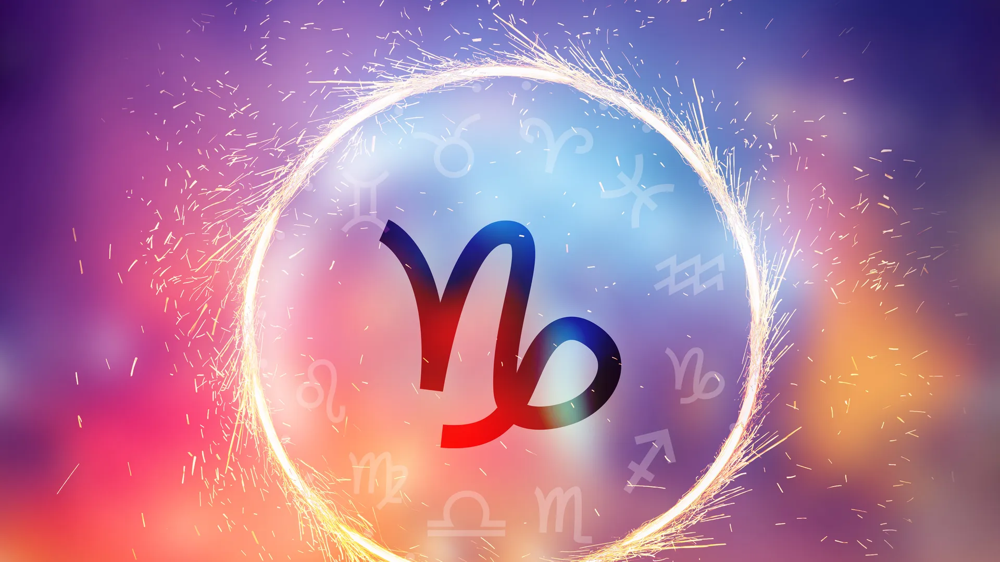

Tauro reina desde el 20 de abril hasta el 20 de mayo. En este periodo, los nacidos bajo su influencia comparten rasgos y características astrológicas similares que conforman su personalidad decidida y enérgica. Los Tauro se caracterizan por su determinación inquebrantable y su enfoque tenaz en sus objetivos. Son personas que aprecian las comodidades de la vida y disfrutan de los placeres sensoriales. Su lema podría ser ‘lento pero constante’, ya que prefieren avanzar con paso firme en lugar de precipitarse.

Virgo tiene su ciclo entre el 23 de agosto y el 22 de septiembre. Aquellos que nacen en este período están bajo la influencia de este signo de tierra. Los nativos de Virgo son reconocidos por su atención al detalle y su enfoque meticuloso en todos los aspectos de la vida. Son trabajadores incansables y perfeccionistas por naturaleza. Su inteligencia y habilidades analíticas a menudo los llevan a destacar en roles que requieren precisión y organización.
Capricornio gobierna desde el 22 de diciembre hasta el 19 de enero. ¿Eres una de los afortunadas que celebran su cumpleaños durante esta temporada? Si es así, prepárate para conocer más sobre tu personalidad única. Los Capricornio son conocidos por su ambición y disciplina. Son trabajadores incansables que se esfuerzan por alcanzar sus objetivos, sin importar lo desafiantes que sean. La lealtad y la responsabilidad son cualidades fundamentales en su personalidad.